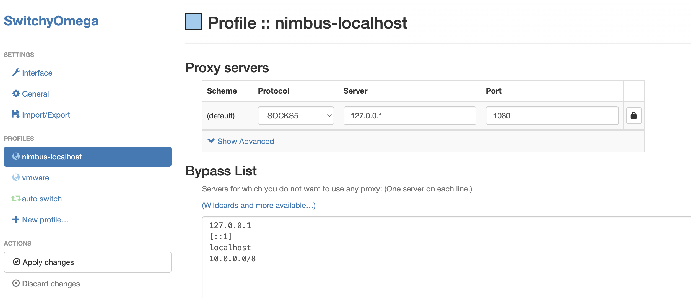
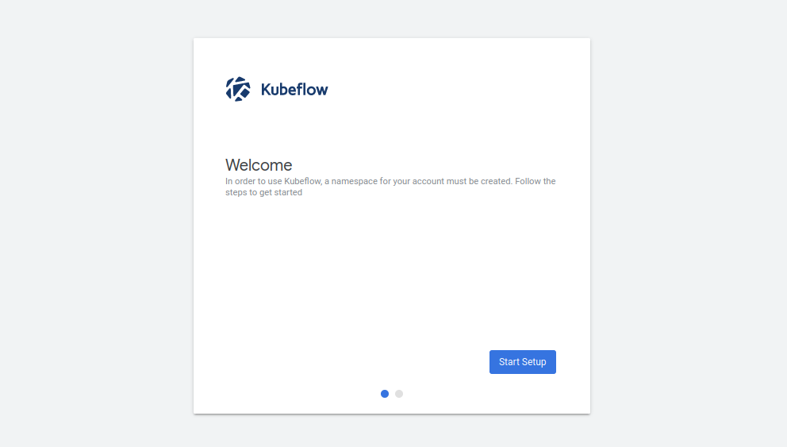
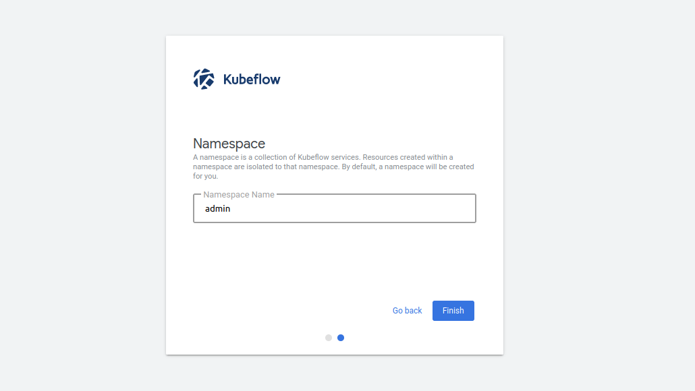
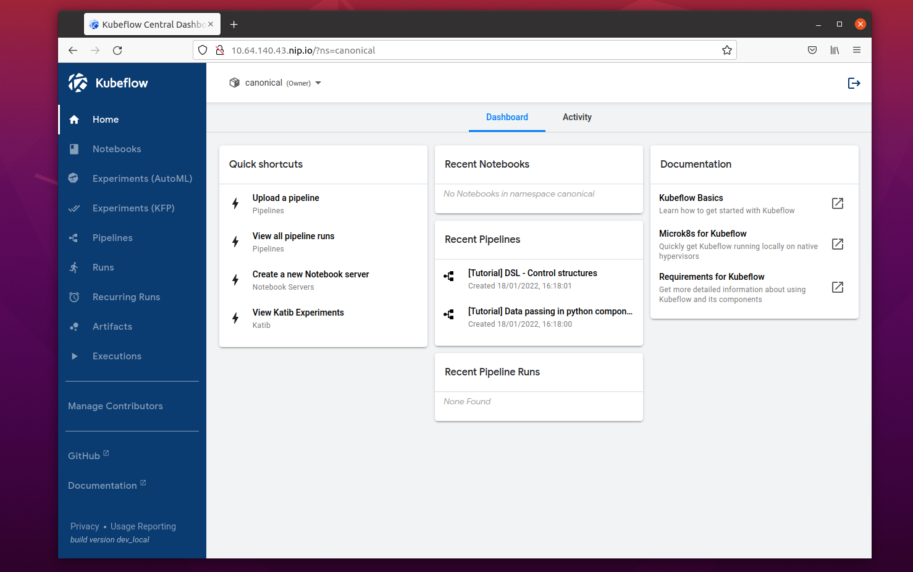

Install Kubeflow on Nimbus¶
Note
Note that the Kubeflow deployment on Nimbus only works for VMware internal use.
This document will introduce you to all you need to know to get started with Charmed Kubeflow on Nimbus.
Create a Nimbus Ubuntu 20.04 VM¶
Use following command to deploy a Ubuntu 20.04 vm on Nimbus using the provided template. The default username/password is
vmware/B1gd3m0z.
# login DBC server to deloy ubuntu 20.04 vm on nimbus
nimbus deploy ovf atlas-ubuntu-vm-3 http://sc-prd-rdops-templates.eng.vmware.com/nimbus-templates/atlas-ubuntu-20-4/atlas-ubuntu-20-04/atlas-ubuntu-20-04.ovf --cpus=16
Install Charmed Kubeflow¶
Login Nimbus VM¶
The journey of accessing Charmed Kubeflow starts from login Nimbus VM. You need to change some configurations before deploying Kubeflow.
First, login the deployed vm. (The default username/password is vmware/B1gd3m0z.) Edit /etc/environment file.
# default password B1gd3m0z
ssh vmware@<vm_ip>
# Remove proxy-related environment variables
sudo sed -i '/proxy/Id' /etc/environment
sudo reboot
Wait for a bit. And then login to the vm.
Install and prepare MicroK8s¶
The first step on our journey is to install MicroK8s. MicroK8s is installed from a snap package. The published snap maintains different channels for different releases of Kubernetes.
sudo snap install microk8s --classic --channel=1.24/stable
For MicroK8s to work without having to use sudo for every command, it creates a group called microk8s. To make it more convenient to run commands, you will add the current user to this group:
sudo usermod -a -G microk8s $USER
newgrp microk8s
It is also useful to make sure the user has the proper access and ownership of any kubectl configuration files:
sudo chown -f -R $USER ~/.kube
To avoid docker.io pull rate limit issue, we need to make some extra changes. Open and edit /var/snap/microk8s/current/args/containerd-template.toml.
sudo vim /var/snap/microk8s/current/args/containerd-template.toml
Edit the following section, which should be at the bottom of the file. Note the endpoint = ["http://10.186.15.152", ].
[plugins."io.containerd.grpc.v1.cri".registry.mirrors]
[plugins."io.containerd.grpc.v1.cri".registry.mirrors."docker.io"]
endpoint = ["http://10.186.15.152", ]
We then fix the AppArmor issue.
sudo systemctl start apparmor
sudo apparmor_parser -r /var/lib/snapd/apparmor/profiles/*
Restart Microk8s to apply above changes.
microk8s stop
microk8s start
MicroK8s will start up as soon as it is ready. It is a completely functional Kubernetes, running with the least amount of overhead possible. However, for our purposes we will need a Kubernetes with a few more features. A lot of extra services are available as MicroK8s “add-ons” - code which is shipped with the snap and can be turned on and off when it is needed. We can now enable some of these features to get a Kubernetes where we can usefully install Kubeflow. We will add a DNS service, so the applications can find each other; we will also add a storage, an ingress controller so we can access Kubeflow components and the MetalLB load balancer application. These will be enabled simply at the same time:
microk8s enable dns storage ingress metallb:10.64.140.43-10.64.140.49
You can see that we added some details when enabling MetalLB, in this case the address pool to use. Many of the add-ons have extra configuration options, which can be found in the MicroK8s documentation.
It will take minimum 5 minutes for MicroK8s to install and set up these additional features. Before we do anything else, we should check that the add-ons have been enabled successfully and that MicroK8s is ready for action. We can do this by requesting the status, and supplying the --wait-ready option, which tells Microk8s to finish whatever processes it is working on before returning:
microk8s status --wait-ready
Now we have a working Kubernetes ready. The next step is to install Juju.
Install Juju¶
Juju is an operation Lifecycle manager (OLM) for clouds, bare metal or Kubernetes. We will be using it to deploy and manage the components which make up Kubeflow. As with MicroK8s, Juju is installed from a snap package:
sudo snap install juju --classic
As Juju already has a built-in knowledge of MicroK8s and how it works, there is no additional setup or configuration needed. All we need to do is to run the command to deploy a Juju controller to the Kubernetes we set up with MicroK8s:
juju bootstrap microk8s
The controller is Juju’s agent, running on Kubernetes, which can be used to deploy and control the components of Kubeflow.
The controller can work with different models which are mapped to namespaces in Kubernetes. You set up a specific model for Kubeflow:
juju add-model kubeflow
Model name must be kubeflow. Due to an assumption made in the upstream Kubeflow Dashboard code, Kubeflow must be deployed in the Kubernetes namespace kubeflow, and therefore we have to use the model name kubeflow here.
That’s it for installing Juju!
Deploying Charmed Kubeflow¶
Charmed Kubeflow is essentially a collection of charms. Each of these charms deploys and controls one application which goes to make up Kubeflow. You can actually just install the components you want by individually deploying the charms and relating them to each other to build up Kubeflow. You may understand the bundles as a recipe for a particular deployment of Kubeflow, and can feel free to edit the configurations and application relations based on this “recipe” instead of starting from scratch. In this way, you can get a working deployment with the minimum efforts.
juju deploy kubeflow --trust
Juju will now fetch the applications and begin deploying them to the MicroK8s Kubernetes. This process can take several minutes. You can track the progress by running:
watch -c juju status --color
This will show a list of the applications and their current status. Don’t be surprised if a few show up error messages to begin with - a lot of the components rely on the operation of others, so it can take up to 20 minutes before everything is ready and talking to one another.
While that is going on, there are two pieces of post-install configurations which can efficiently be done at this point.
Configure the components¶
For authentication and allowing access to the dashboard service, some components will need to be configured with the URL to be allowed. This depends on the underlying network provider, but for the known case of running on a local MicroK8s, we also know what the URL will be. It is configured with Juju using the following commands:
juju config dex-auth public-url=http://10.64.140.43.nip.io
juju config oidc-gatekeeper public-url=http://10.64.140.43.nip.io
Finding the URL: If you have a different setup for MicroK8s, or you are adapting this tutorial for a different Kubernetes, you can find the URL required by examining the IP address of the istio-ingressgateway service. For example, you can determinine this information using kubectl: microk8s kubectl -n kubeflow get svc istio-ingressgateway-workload -o jsonpath='{.status.loadBalancer.ingress[0].ip}'
To enable simple authentication and set a username and password for your Kubeflow deployment, run the following commands:
juju config dex-auth static-username=admin
juju config dex-auth static-password=admin
Feel free to use a different (more secure!) password if you wish.
Login to Charmed Kubeflow¶
The URL for the Kubeflow dashboard is the same as the one determined earlier for the configuration steps - in the case of a default MicroK8s install, it’s: http://10.64.140.43.nip.io
Before accessing Kubeflow in browsers, please guarantee every component is in “active” status.
For remote deployment, which is our cases, creating a SOCKS proxy is required to access the dashboard. This can be done as follows:
Connect to the vm with SOCKs proxy enabled.
ssh -D localhost:1080 vmware@<vm_ip>
Go to the browser on your computer. Go to Settings > Network > Network Proxy, and enable SOCKS5 proxy pointing to: 127.0.0.1:1080. If you are using firefox, the setting is as below:
If you are using Chrome, the setting is as below:
You should now see the Kubeflow “Welcome” page:
Click on the “Start Setup” button. On the next screen you will be asked to create a namespace. This is just a way of keeping all the files and settings from one project in a single, easy-to-access place. You can choose any name you like…
Once you click on the “Finish” button, the Dashboard will be displayed!
See also